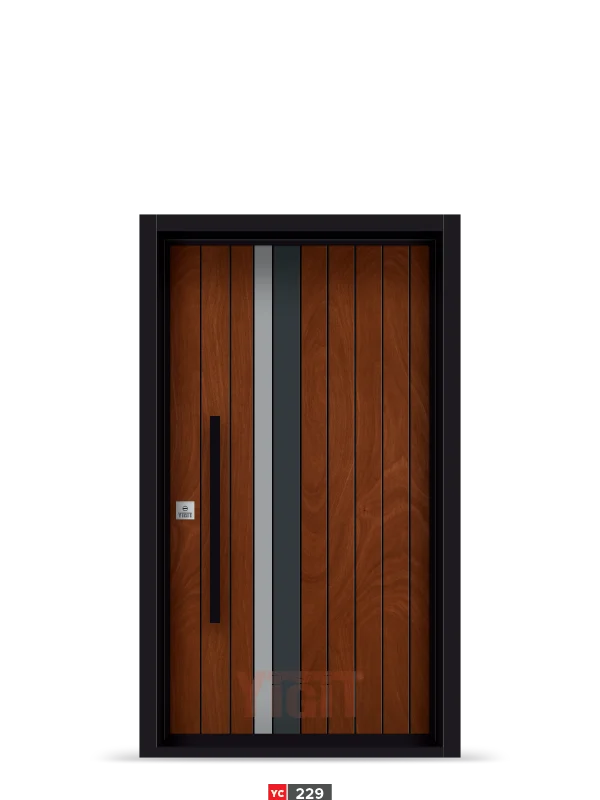

سلسلة الجودة
كود: YC 229
إنتاج عالي الجودة
رمز المنتج:
YC 229
اللونLuka / رمادي فاتح / أنثراسيت
التصميمإطار إنتاج خاص
الوظيفةقياسي / قابل للتخصيص
المادةMDF
• يمكن تخصيص هذا النموذج بخيارات مختلفة من الألوان والإطارات.
• يصبح التصميم نفسه مخصصًا لك بتركيبات مختلفة.
×